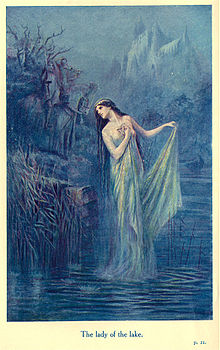

Although the lake itself is never given a name, the Lady of the Lake, who resides here, plays an important role in Arthur's adventures.
When Arthur breaks his original sword, the Sword in the Stone, it is the Lady of the Lake who hands him Excalibur. Or, depending on the story, she repairs the sword, which was always Excalibur.
This Lady really seems to get around, as she not only appears to other characters in the Arthurnian legends, but also makes appearances in later works unrelated to King Arthur! I reckon she's a fan favorite.
Go back